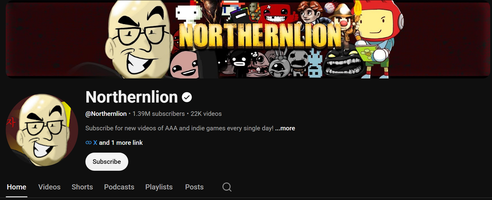
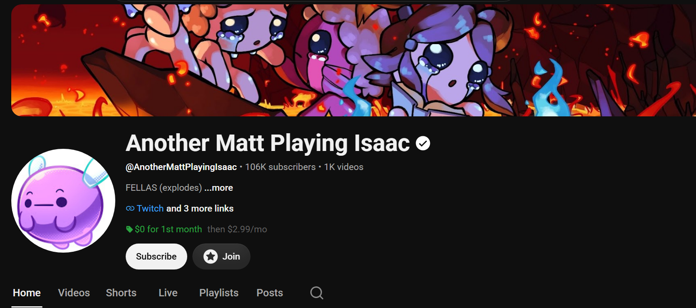
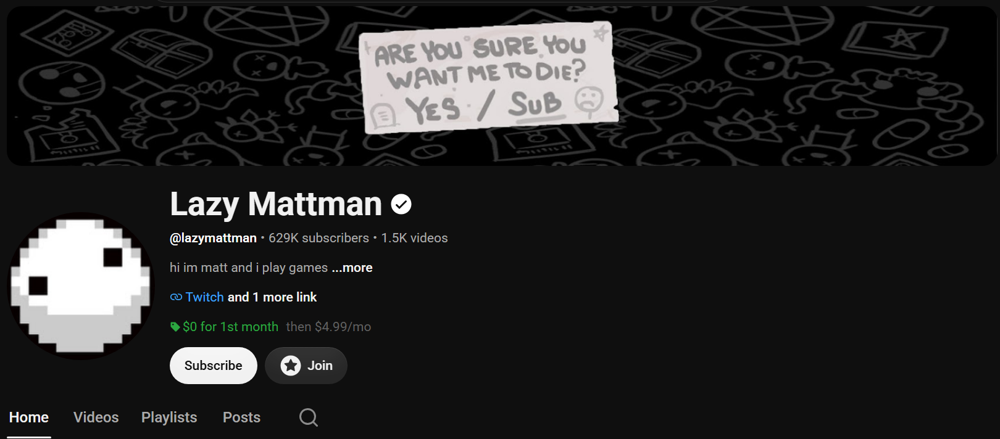

You don't have to play..
You can watch too!
There's a pretty steep asking price to get all Isaac has to offer. If you don't want to shell that out, you can still have fun with the game by watching all these great youtubers! There's a lot more great ones, but these are the ones I personally recommend. Especially Northernlion! He doesn't only do Isaac, he does a lot of great variety stuff too.


